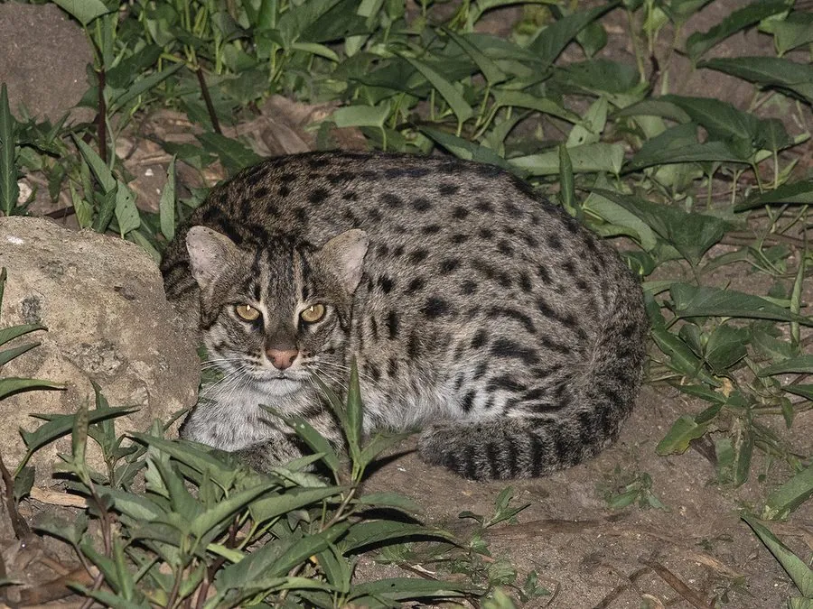

哺乳动物 · 动物界
渔猫 Prionailurus viverrinus

南亚与东南亚湿地中的壮实猫类，趾间有蹼、善游泳，常在水边伏击鱼类，因湿地被开发而数量持续下降。
- 分类
- 门脊索动物门纲哺乳纲目食肉目科猫科属豹猫属
- 栖息环境
- 沼泽、河流、湖泊、红树林与水田等湿地环境
- 地理分布
- 南亚与东南亚，包括印度、尼泊尔、孟加拉国、斯里兰卡、泰国、越南与印度尼西亚
- 保护级别
- IUCN 易危（VU）；CITES 附录Ⅱ
物种志
渔猫体长 57–78 cm，尾长 20–30 cm，体重约 5–16 kg。体形粗壮，头宽吻短，耳朵小而圆，四肢短粗，脚趾间有蹼，毛色灰褐，全身布满深色斑点与条纹，面部有白色斑纹，尾短而粗。
它们分布于印度、尼泊尔、孟加拉国、斯里兰卡、缅甸、泰国、越南、柬埔寨和印度尼西亚的湿地，包括沼泽、河流、湖泊和红树林，多在夜间活动。食物以鱼类为主，也捕食蛙类、甲壳类、鸟类和小型哺乳动物，常在水边静伏后用前爪拍击水面捕鱼。每胎 1–3 仔，妊娠期约 63 天。湿地围垦、水污染和过度捕鱼使种群下降，被列为易危物种。
形态与习性
- 食性鱼类为主，也吃蛙类、甲壳类、鸟类与小兽
- 体长57–78 cm，尾长 20–30 cm
- 体重约 5–16 kg
- 繁殖妊娠期约 63 天，每胎 1–3 仔
- 活动节律夜行性，独居，善游泳
- 特点趾间有蹼，体形粗壮，尾短而粗
趣味知识
- 渔猫的脚趾间有蹼，是猫科中少数擅长游泳的种类之一。
- 它常蹲伏在水边，用前爪拍击水面，把鱼惊起后迅速捕捉。
- 渔猫有时会潜入水中追逐猎物，也会在稻田和红树林中觅食。